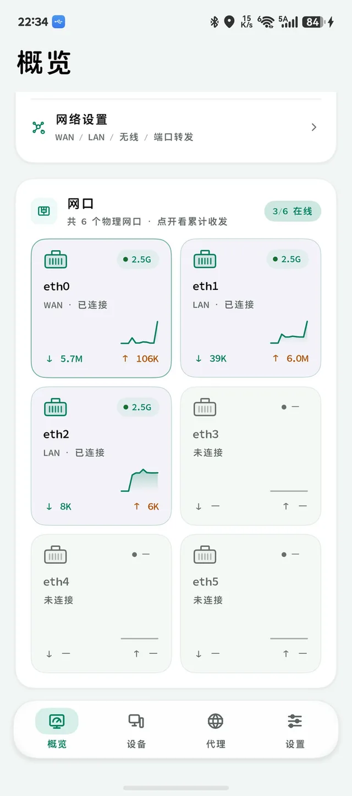
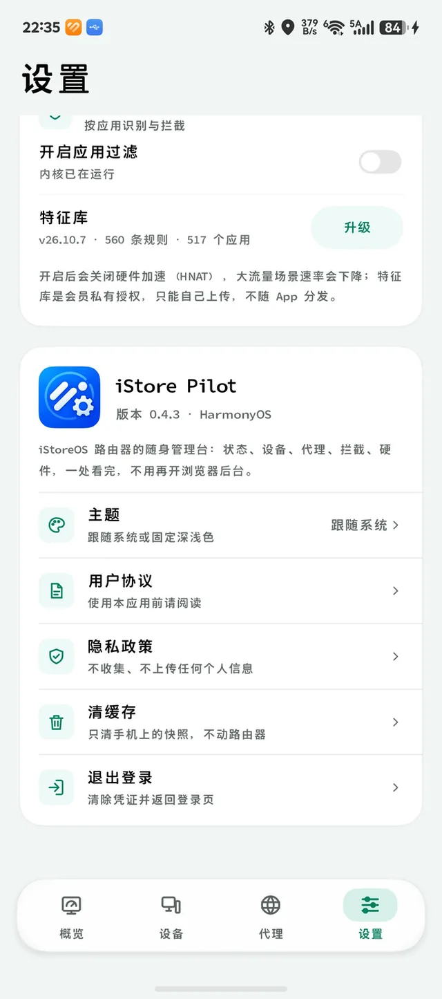

路由器上发生的事，手机上就能看清。See what your router
is actually doing.
先在路由器装一次插件，再在手机上装 App —— 之后实时速率、设备清单、应用流量、代理切换、拦截日志都在手机里看。 Install the plugin on your router once, then the app on your phone. Live throughput, devices, per-app traffic, proxy switching and block logs — all in your pocket.
第一步 · 装路由器插件Step 1 · Router plugin
iStore Agent
v0.4.5 · 只装一次，之后在 App 内升级install once, update from the app
iStoreOS 24.10：系统 → 软件包 → 上传 .ipk。或把 .run 传到路由器，先 sh 包名 --check 再执行。
iStoreOS 24.10: System → Software → upload the .ipk. Or copy a .run to the router and run sh file --check first.
第二步 · 装手机 AppStep 2 · Phone app
Android
下载 APKDownload APK
扫码或点按，约 2.7 MBScan or tap · 2.7 MB
HarmonyOS
0.4.4 审核中0.4.4 in review
前往应用市场Open AppGallery
先装 0.4.3，新版本通过后自动更新 Install 0.4.3 now — updates itself once approved
界面Screens



能做什么Features
实时速率Live throughput
上下行与每个网口的速率，5 秒刷新Up/down and per-port rates, refreshed every 5s
设备清单Devices
在线状态、IP、MAC，可看单机流量Online state, IP, MAC, per-device traffic
应用识别App traffic
按特征库识别应用，标出识别来源App-level traffic with match source labels
代理切换Proxy
OpenClash / Passwall 启停与节点选择Start/stop and pick nodes for OpenClash or Passwall
拦截日志Block logs
DNS 查询与拦截记录，可只看被拦的DNS queries and blocks, filter to blocked only
网络测速Speed test
FastNet 三段测速，实时看上下行，留最近 20 次记录Three-stage FastNet test with live rates and 20-run history
远程访问Remote access
填域名或 IPv6，在外网也能连回家Connect home over IPv6 or a domain
运行条件Requirements
- 路由器：iStoreOS 24.10.8 及以上（x86_64 / ARM64 / ARMv7） Router: iStoreOS 24.10.8 or newer (x86_64 / ARM64 / ARMv7)
- 路由器端需安装
luci-app-istore-agent，可在 Release 里下载 .ipk 或 .run Installluci-app-istore-agenton the router — grab the .ipk or .run from Releases - 手机与路由器需在同一局域网，或通过 IPv6 / 域名远程连接 Phone and router on the same LAN, or reachable over IPv6 / a domain